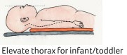

|
Recognize |
Assess for |
Manage |
| C |
Catastrophic Bleeding |
Life-threatening hemorrhage |
- Ensure direct pressure/compression bandage
- Tourniquet for extremity bleeding (note time applied)
|
| A |
Airway Compromise |
Position/patency Need for protection |
- Spinal motion restriction as indicated; expose neck to assess for neck injury/airway compromise
- Jaw thrust to open; oral suctioning as needed; oral airway (if obtunded)
- Early intubation with MILS if c-spine not cleared; plan for appropriate postintubation sedation

|
| B |
Respiratory Failure |
Apnea/signs of poor respiratory effort
Signs of pneumothorax |
- Assist with BVM/prepare for RSI, SFI
- Assess for pneumothorax, hemothorax and/or pericardial tamponade
- Decompress chest as indicated
- If possible discuss logistics of chest tube insertion for intubated patients with a pneumothorax, with TMP
|
| C |
Hemorrhagic Shock |
Cool skin, tachycardia, decreased CRT; decreased BP is a late sign of shock
Look for bleeding source:
- Head/scalp
- Chest/abdomen/pelvis
* isolated femur # unlikely cause of shock in young children |
- Assist with BVM/prepare for RSI, SFI
- Assess for pneumothorax, hemothorax and/or pericardial tamponade
- Decompress chest as indicated
- If possible discuss logistics of chest tube insertion for intubated patients with a pneumothorax, with TMP
|
| D |
Severe Head Injury |
GCS ≤ 8 Responds to pain only/ Unresponsive (AVPU) |
-
Increase head of bed 30 ͦ, head midline
-
RSI for intubation with MILS; maintain ETCO2 35-40 mmHg
-
Provide ongoing Analgesia/sedation
-
Monitor closely for seizures (have low threshold for treatment; discuss potential management with TMP)
If impending herniation:
-
3% NaCl 5 mL/kg/dose IV (MAX 250 mL/dose) over 10 minutes (Repeat PRN) and/or Mannitol 1 g/kg/dose (MAX 100g) over 15 minutes
-
Initiate brief period of hyperventilation, ETCO2 30-35 mmHg, until responsive pupil, normalized VS
|
| Impending Herniation |
- Unilateral fixed & dilated pupil
- Cushing’s Triad:
- ↑ HR,↑ BP, irregular RRs
|
| Neurogenic Shock |
- ↓ HR, ↓BP
- Abnormal tone, ↓ power
|
- Vasopressor infusion IV/IO to maintain BP
- NORepinephrine (0.05 mcg to 0.1 mcg/kg/min; titrate to effect in 0.02 mcg/kg/min increments; MAX 2 mcg/kg/min)
|
| E |
Exposure |
|
- Paediatric patients are more susceptible to heat loss
- Remove any wet or damp clothing/blankets
- Maintain normothermia during assessment and transport
- Consider hats, warming mattress in infants, toddlers
- Use humidifier during mechanical ventilation
- Use fluid warming device
- Monitor core temperature continuously
|